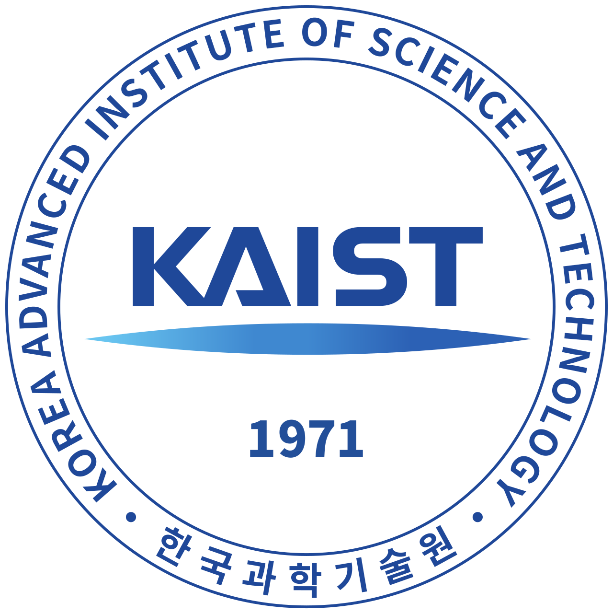
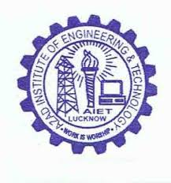

Light passing through one slit creates a blur; through two slits, it creates a pattern. In the same way, new ideas often emerge when different perspectives come together.
Perhaps reality is not made of objects, but of possibilities. We look, and a possibility becomes the world.
News
Research
My dissertation asks whether frozen Large Vision-Language Models already encode enough spatial grounding knowledge in their attention heads to perform visual understanding — without any labeled data, fine-tuning, or architectural change. The central finding: a small subset of contrastive grounding heads can be discovered automatically through dual prompting with semantically opposing descriptions, and their differential attention aggregated into precise spatial signals.
Referring Expression Comprehension
Training-free attention-head discovery; outperforms training-free baselines by up to 27.95% on RefCOCO.
Accepted · TMLR ’26 · J2C CertificationReferring Expression Segmentation
Extended to pixel-level masks via spectral label propagation — competitive with supervised methods, no external segmentation model.
Under review · TCSVTVisual Question Answering
Generalizing contrastive head discovery to open-ended visual reasoning tasks.
In progressPublications
† Corresponding author · * Equal contribution
Education


Research Experience
- Developed training-free visual grounding and segmentation via contrastive attention head discovery in frozen LVLMs
- Built a vision-based 6DOF pose estimation system for an autonomous EV charging robot (object detection, PnP solving, AprilTag localization)
- Developed a perception pipeline for a dual parking robot with camera-LiDAR steering estimation, achieving ≤2° alignment error
- Built a centralized ROS 2 fleet server coordinating multiple parking robots to lift and transport a vehicle as a rigid body, with synchronized lift/carry barriers and a shared-frame wheelbase safety check
- Mentored 2 M.S. students
- Built a microcontroller blockchain network with edge-cloud interplay for secure agricultural data collection (MEITY-funded “TribeConnect” smart tribal eco-platform, Chhattisgarh)
- Developed an AI-based assistive device for visually impaired users with real-time scene captioning (DST-funded)
- Developed a low-cost IoT-based intelligent stethoscope with embedded AI for early diagnosis of heart, lung, and prenatal conditions (DST-funded)
- Mentored 2 M.Tech students

- Developed supervised neural network models for automated animal intrusion detection and deterrence in agricultural fields
- Implemented a query-by-humming song retrieval system using audio feature matching, in collaboration with a PhD researcher
Ongoing Projects
Dual Parking Robot
An intelligent robotic system that autonomously positions itself beneath a vehicle by detecting front and rear tire centers using dual cameras and deep learning. YOLO-based models handle partial tire detection and precise center localization, achieving ≤2° alignment error.


Autonomous EV Charging Robot
An autonomous system for EV charging that integrates AprilTag-based detection for charger localization, YOLO models for detecting CCS1-type ports, and SAM for segmenting the port region. The system aligns and connects the charger using real-time vision and control.
Training-Free Visual Grounding in LVLMs
Discovering that frozen vision-language models encode spatial grounding signals in a small subset of specialized attention heads. Through contrastive prompting and mechanistic analysis, we extract precise localization and segmentation — without any labeled data, fine-tuning, or external models.

Awards & Honors
Technical Skills
Programming
ML / Deep Learning
Computer Vision
Robotics Hardware
Tools
Collaborators
Professional Service
Conference Reviewer
Journal Reviewer
Volunteer & Outreach
- Student Ambassador, Here Comes KAIST (HCK) program, 2025–26
- Student Coordinator, KAIST International Summer School (KISS), 2024
- Student Mentor for new Fall International Students, 2023 & 2025